Para este juego, necesitamos un punto de mira para ir tocando los objetos que van apareciendo.
Los objetos que van apareciendo y moviéndose por la pantalla, que serán disfraces de un único objeto.
También tendremos un objeto game over para cuando acabe el juego y una cuenta atrás para comenzarlo.
Pondremos también un objeto con unos textos para ir dando animos cada vez que consigamos ciertos puntos y
por último otro objeto que indicará que le hemos añadido 1 segundo cada vez que acertemos en un objeto
Usaremos cualquier escenario de la biblioteca de Scratch.
Para descargar los objetos necesarios para el juego, lo haremos desde este link. Es un archivo comprimido con 6 objetos. Lo descargaremos y lo descomprimimos en el directorio del alumno.
El juego consiste en que tenemos que ir tirando al plato con los objetos que van apareciendo. Sumaremos
puntos y tendremos un tiempo limitado para hacerlo.
Empezaremos por poner la cuenta atrás para el inicio del juego. Colocaremos el objeto y pondremos el disfraz
del número "3".
Esperaremos un segundo y pondremos el disfraz del número "2" y esperaremos otro segundo y pondremos el
disfraz del número "1".
Finalmente, ocultaremos el objeto y mandaremos un mensaje "Jugar" para empezar el juego.
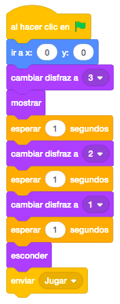
Ahora pondremos el punto de mira. Cuando reciba el mensaje "Jugar", lo mostraremos y lo mandaremos a la capa delantera para que esté siempre por encima de cualquier objeto. Haremos un bucle para que continuamente siga al puntero del raton y ponga el disfraz de la mira normal.
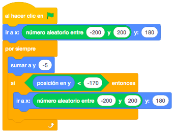
Ahora pondremos el objeto que aparecerá y se irá moviendo por la pantalla. Crearemos una variable "Velocidad" a la que asignaremos la velocidad a la que se irá moviendo el objeto que aparece que irá incrementándose según se vayan sumando puntos.
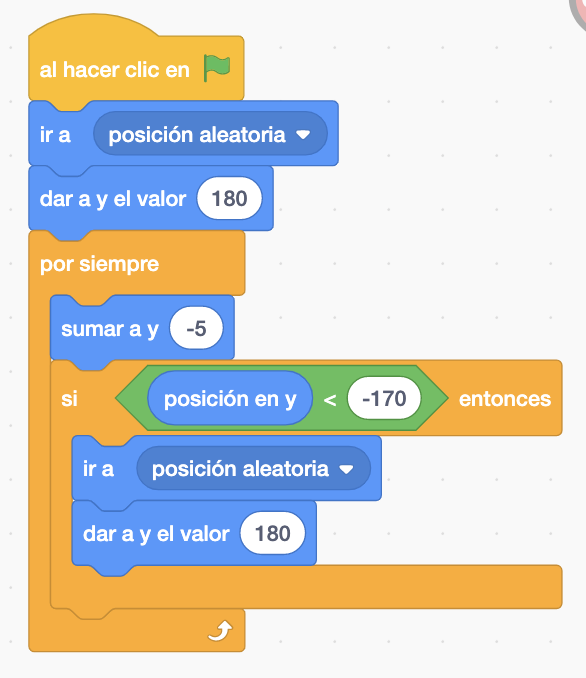
Ahora, al recibir el mensaje "Jugar". Nos posicionaremos el el centro de la pantalla y nos moveremos
continuamente por ella a la velocidad que hayamos indicado en la variable "Velocidad".
Controlaremos que si tocamos un borde, gire para moverse en otra dirección.
También programaremos que si tocamos el punto de mira y presionamos el botón del ratón (estamos haciendo
click encima), cambiaremos de disfraz y lo volveremos a colocar en otra posición. La gestión de los puntos
la haremos en el punto de mira.
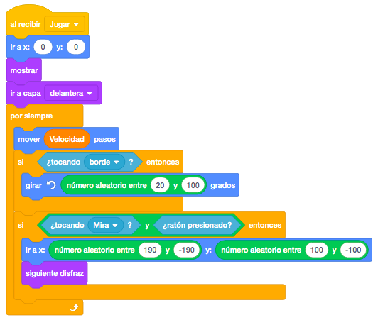
Volveremos al objeto del punto de mira. Vamos a crear una nueva variable "Puntos".
Además, programaremos añadiéndolo al bucle del recibir el mensaje "Jugar", que si tocamos los objetos que
aparecen y además presionamos el botón del ratón (estamos haciendo click encima del objeto), sumaremos los
puntos y cambiaremos el disfraz a la mira con la explosión para simular que hemos dado al objeto.
Como vamos a añadirle unos segundos al tiempo, mandaremos un mensaje "Tiempo" que después programaremos.
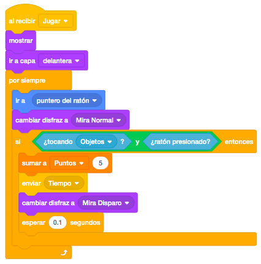
Colocaremos ahora el objeto tiempo, que tiene el texto "+1 seg". Crearemos también la variable "Tiempo".
En el objeto programaremos el recibir el mensaje "Tiempo", en el que sumaremos segundos a la variable
"Tiempo" y mostraremos el objeto durante un tiempo.
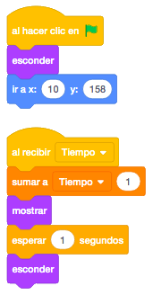
Vamos a programar el objeto con los mensajes de ánimo. Lo colocaremos y cuando empecemos a jugar controlaremos que con determinada cantidad de puntos, mostramos el objeto durante un tiempo. Iremos cambiando de disfraz dependiendo de los puntos conseguidos.
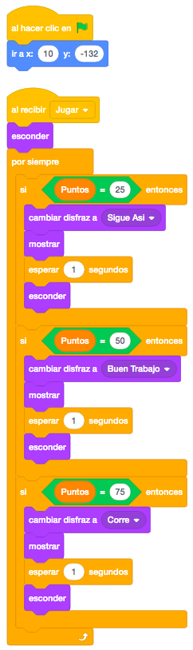
Vamos a programar ahora el escenario, que llevará todo el control del tiempo, del record y de la velocidad.
Crearemos una nueva variable "Record" que tendrá la mayor puntuación conseguida en el juego.
Lo primero que programaremos será un bucle para ir controlando si superamos el record para ir asignando el
nuevo record, y cada vez que lo superemos, asignaremos el nuevo record y aumentamos la velocidad.
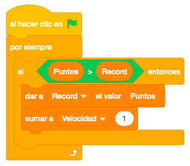
Ahora, al recibir el mensaje "Jugar", inicializaremos las variables "Puntos" y "Tiempo", mostraremos el tiempo e iremos descontando 1 cada segundo hasta quedarnos a 0. Al finalizar el tiempo, esconderemos la variable, enviaremos el mensaje "Game Over" para esconder el resto de objetos y detendremos el programa.
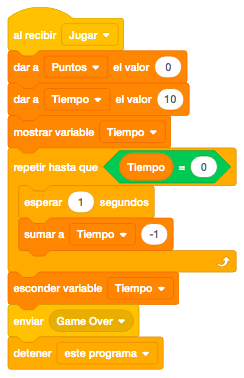
Finalmente vamos a programar un truco para poner el record a "0" cuando lo estimemos oportuno. En este caso programaremos que al presionar la tecla "R", ponemos a "0" la variable "Record".
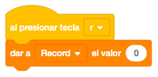
Para terminar, programaremos el mensaje "Game Over.
En el punto de mira, en los objetos que van apareciendo y en los mensajes de ánimo, esconderemos el objeto
y detendremos el resto de programas del objeto.
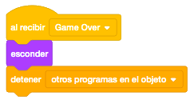
Y en el objeto "Game Over" programaremos que empiece con un tamaño de "0" y al recibir el mensaje "Game Over" mostraremos el objeto y lo haremos grande poco a poco.
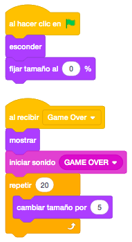
Otro reto que podemos hacer es ponerle sonidos y efectos al juego.
Y el juego quedaría así.

Para ver el juego terminado pulsa
aquí.
Para descargarte el juego terminado pulsa
aquí.